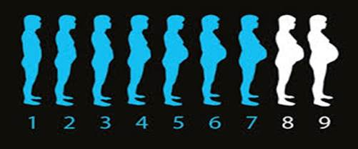
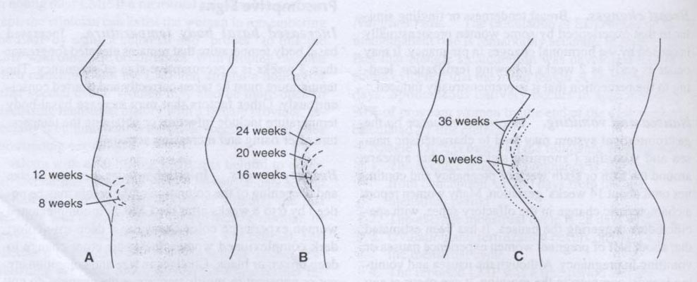
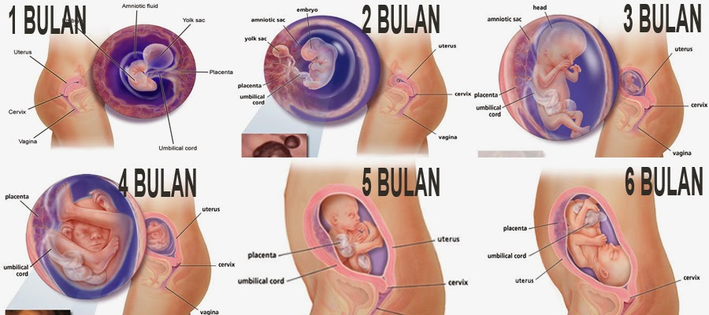
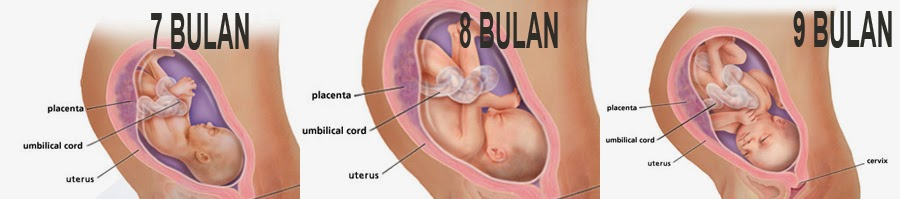

गर्भावस्था एक स्त्री के जीवन में एक अद्भुत समय है। यह भी एक तनावपूर्ण पल जब एक रहस्यमय नए जीवन को आगे बढ़ने और गर्भ में विकसित किया गया था। एक बार जब गर्भावस्था होता है, विभिन्न प्रभाव महिला के शरीर में पाए जाते हैं; हार्मोनल परिवर्तन, शरीर के आकार, साथ ही महिलाओं की भावनात्मक स्थिति के कारण दोनों प्रभाव गर्भवती हो जाते हैं।
गर्भ में भ्रूण के विकास, उभरते संकेत हैं कि गर्भावस्था से संकेत मिलता है के साथ। गर्भावस्था में, परिवर्तन, पूरे महिला के शरीर में पाए जाते हैं, साथ ही स्तन (स्तन) पर विशेष रूप से बाहरी उपकरण और आंतरिक जननांग पर। इसका कारण यह है गर्भावस्था में somatomamotropine, एस्ट्रोजन, और प्रोजेस्टेरोन हार्मोन की भूमिका है।
शारीरिक परिवर्तन के अलावा, गर्भवती महिलाओं को भी मनोवैज्ञानिक परिवर्तन है, जो भी हार्मोनल परिवर्तन से प्रभावित हैं अनुभव होगा। इन परिवर्तनों को आंतरिक के साथ बातचीत और एक गर्भवती महिला के संक्रमण काल प्रभावित करने वाले कारकों एक माँ बनने के लिए। अक्सर, हम एक औरत कह वह कितनी खुश माँ बनने की वजह से था सुनते हैं। लेकिन नहीं, कभी कभी वहाँ भी महिलाओं, उसकी सुंदरता खोने, या बच्चे की संभावना असामान्य है के बारे में चिंतित हैं, जो गर्भावस्था के बारे में चिंतित हैं।
एक पेशेवर के रूप में, दाई उनकी भूमिका प्रदर्शन और ठीक ढंग से काम करना चाहिए। यह शारीरिक और मनोवैज्ञानिक कि, क्या हुआ तो यह है कि दाइयों की देखभाल, समर्थन प्रदान कर सकते हैं, और पते गर्भवती महिलाओं की चिंताओं को मदद में परिवर्तन की जांच करने के लिए बहुत महत्वपूर्ण है। इसलिए, दाई प्रसव पूर्व की जांच दिनचर्या (प्रसव पूर्व देखभाल) करने के लिए गर्भवती महिलाओं को प्रोत्साहित करना चाहिए। प्रसव पूर्व देखभाल का मुख्य उद्देश्य एक तरह से माँ, जटिलताओं कि जीवन के लिए खतरा हो सकता है का जल्दी पता लगाने के साथ एक विश्वास संबंध बनाने के लिए दोनों माँ और बच्चे के लिए स्वस्थ और सकारात्मक परिणाम की सुविधा के लिए, जन्म के लिए तैयारी, और शिक्षा प्रदान कर रहा है।
- मां और शिशु में शारीरिक सुधार
- मां की शारीरिक परिवर्तन।
-
गर्भ की अवधि भ्रूण के जन्म के लिए गर्भाधान से शुरू होता है। एक सामान्य गर्भावस्था की लंबाई 280 दिन या 40 सप्ताह, अंतिम माहवारी के पहले दिन से गिनती है। भ्रूण वजन 1000 ग्राम के साथ गर्भावस्था, जब यह समाप्त हो गया है 0-8 सप्ताह है, यह एक गर्भपात कहा जाता है। गर्भावस्था के 29 से 36 सप्ताह, बच्चे के जन्म के मामले में कुसमयता बुलाया। 37 से 42 सप्ताह अवधि कहा जाता है। गर्भावस्था के 42 सप्ताह से अधिक serotinus कहा जाता है।
गर्भवती पेट का इज़ाफ़ा - तिमाही मैं
- 4 सप्ताह / माह 1
- मदर मासिक धर्म में देरी की। स्तनों में दर्द होता है और बढ़े हुए हो जाते हैं। क्रोनिक थकान (बसे) और अक्सर पेशाब हो रहा शुरू कर द िया। यह स्थिति अगले तीन महीने तक चली। एचसीजी (Chorionic Gonadotrophine हार्मोन) गर्भाधान के बाद मूत्र और 9 दिनों के सीरम में।
- 8 सप्ताह / माह 2
- मतली और वमन (सुबह बीमारी) करने के लिए 12 सप्ताह के गर्भ हो सकता है। गर्भ में एक गोलाकार रूप (गोलाकार) में नाशपाती से बदलता है। ल्यूकोरिया (योनि स्राव) बढ़ जाती है। वजन दिखाई नहीं है।
- सप्ताह 12 / माह 3
- गर्भाशय pubis (जघन हड्डी) से ऊपर बढ़ जाता है। ब्रेक्सटन हिक्स संकुचन (झूठी संकुचन) शुरू करते हैं और गर्भावस्था के दौरान जारी रखा जा सकता है। गर्भावस्था के दौरान मूत्र मार्ग में संक्रमण के लिए क्षमता बढ़ रही है। पहली तिमाही के दौरान 1-2 किलो के आसपास वजन। अपरा अब पूरी तरह कार्यात्मक और उत्पादन हार्मोन है।
- तिमाही द्वितीय
- सप्ताह 16 / महीना 4
- बुध्न (गर्भाशय के ऊपर) pubis और नाभि के बीच बीच में है। प्रति सप्ताह 0.4-0.5 किलो की माँ का वजन बढ़ जाता है और ऊर्जा का एक बहुत हो सकता है। योनि स्राव में वृद्धि हुई है (लेकिन सामान्य अगर यह खुजली नहीं है, जलन, या दुर्गंधयुक्त)। मूत्राशय और अक्सर पेशाब पर दबाव कम हो।
- सप्ताह 20 / महीना 5
- बुध्न नाभि के रूप में उच्च तक पहुँचता है। स्तन जारी करने कोलोस्ट्रम (पहले मां के दूध) शुरू करते हैं। एमनियोटिक द्रव के 400 मिलीलीटर तक बर्खास्त। बेहोशी और चक्कर आना अनुभूति हो सकता है, खासकर अगर स्थिति अचानक बदल दिया है। वैरिकाज़ नसों हो सकता है। माताओं भ्रूण आंदोलन लग रहा है। घेरा (स्तन के अंधेरे क्षेत्र) काला हो गया है। नाक की भीड़ हो सकता है, वहाँ पैरों में ऐंठन हो सकता है, और कब्ज अनुभव किया जा सकता है।
- सप्ताह 24 / महीना 6
- बुध्न नाभि से ऊपर है। पीठ दर्द और पैरों में ऐंठन हो सकता है। striae gravidarum की तरह त्वचा परिवर्तन (पेट / खिंचाव निशान पर एक सफेद पट्टी), पुल्टिस (चेहरे पर काले धब्बे), LINEA Nigra (काला लाइन पेट), और मुँहासे। Nosebleeds हो सकता है और पेट (पेट) पर खुजली का अनुभव हो सकता है क्योंकि गर्भाशय बढ़े और त्वचा फैला है।
- तिमाही III
- सप्ताह 28 / महीना 7
- बुध्न नाभि और epigastria बीच बीच में है। बवासीर (गुदा के आसपास रक्त वाहिकाओं की वृद्धि) हो सकता है। सीने में एक के पेट में सांस लेने की जगह। भ्रूण की रूपरेखा palpated जा सकता है। ईर्ष्या महसूस किया जा करने के लिए शुरू कर सकते हैं।
- सप्ताह 32 / महीना 8
- बुध्न epigastria, पूर्ण स्तनों और कोमलता पर पहुंच गया। लगातार पेशाब फिर से हो सकता है। इसके अलावा, यह भी श्वास कष्ट अनुभव हो सकता है (साँस लेने में कठिनाई)
- सप्ताह 38 / महीना 9
- श्रोणि / श्रोणि मां (बिजली) में बच्चे को घटाएँ। अपरा की मोटाई लगभग 4 बार 18 सप्ताह के गर्भ और 0.5-0.6 किलो वजन की अवधि है। पीठ में दर्द और बार-बार पेशाब बढ़ जाती है। ब्रेक्सटन हिक्स वृद्धि हुई गर्भाशय ग्रीवा और गर्भाशय के निचले खंड प्रसव के लिए तैयार है।
- भ्रूण में शारीरिक परिवर्तन
-
भ्रूण के विकास के चरणों
- पहले महीने में भ्रूण के विकास
- दूसरे महीने में भ्रूण के विकास
- तीसरे महीने में भ्रूण के विकास
- चार महीने में भ्रूण के विकास
- भ्रूण के विकास के पांचवें महीने
- भ्रूण के विकास 6 महीने
- भ्रूण के विकास सात महीने
- 8 महीने भ्रूण विकास
- 9 महीने भ्रूण विकास
- गर्भावस्था में मनोवैज्ञानिक सुधार
- पहली तिमाही (1-3 महीने)
- तिमाही द्वितीय (4-6 महीने)
- तीसरी तिमाही (7-9 महीने)

जल्द ही गर्भाधान के बाद, गर्भावस्था में प्रोजेस्टेरोन और एस्ट्रोजन के स्तर में वृद्धि होगी। आज सुबह, कमजोरी, थकान, और स्तन वृद्धि में मतली और उल्टी के कारण होगा। वह अस्वस्थ महसूस किया और अक्सर उसके गर्भ से नफरत करता है। कई माताओं महसूस निराशा, अस्वीकृति, चिंता, और उदासी। अक्सर उसकी गर्भावस्था की शुरुआत में वह गर्भवती नहीं पाने के लिए आशा व्यक्त की।
पहली तिमाही में, माँ हमेशा तम्बू-पिन के लिए लग रही हो जाएगा आश्वासन दिया है कि वह वास्तव में गर्भवती है। कि शरीर में होते हैं कोई भी परिवर्तन हमेशा क्योंकि उसके पेट में अभी भी छोटा है, ध्यान से विचार किया जाएगा, गर्भावस्था एक माँ है जो / दूसरों के लिए कहा जा सकता है उसकी बांह होने के लिए रहस्य है।
पहली तिमाही में एक महिला पर संभोग की इच्छा अलग है। हालांकि कुछ महिलाओं को उच्च कामोत्तेजना का अनुभव है, उनमें से ज्यादातर इस अवधि के दौरान कामेच्छा की कमी हुई। इस स्थिति में अपने साथी के साथ खुले तौर पर और ईमानदारी से संवाद करने के लिए एक की जरूरत है बनाता है। कई महिलाओं को प्यार करने की जरूरत महसूस करते हैं और प्यार करने के लिए मजबूत लग रहा है, लेकिन सेक्स के बिना। कामेच्छा थकान, मिचली, स्तन वृद्धि, चिंताओं, और भय से प्रभावित है। इस सब के सब पहली तिमाही में गर्भावस्था का एक सामान्य हिस्सा है।
एक आदमी की पहली प्रतिक्रिया है, यह जानकर कि वह पिता बन जाएगा तत्परता पर चिंता के साथ मिश्रित एक पिता बनने के लिए और अपने परिवार के लिए एक जीवित करने के लिए बच्चों के लिए अपनी क्षमता में गर्व का उद्भव है। एक संभावित पिता जो महिलाएं गर्भवती हैं और बच्चे को नुकसान पहुँचाने के डर से सेक्स से परहेज शुरू की स्थिति के बारे में बहुत चिंतित हो सकता है। वहाँ भी एक आदमी है जो अपेक्षाकृत बड़ा है गर्भवती महिलाओं के खिलाफ यौन है। प्रतिक्रिया से पता चला है कि वह करने के अलावा, एक पिता की स्थिति को समझते हैं और इसे स्वीकार करने के लिए सक्षम होना चाहिए।
दूसरी तिमाही में, आमतौर पर मां स्वस्थ लगता है। माँ के शरीर पहले से ही उच्च हार्मोन के स्तर को और परेशानी के आदी होने के कारण गर्भावस्था कम है। माँ के पेट बहुत बड़ा है, तो यह एक बोझ के रूप में नहीं माना जाता है नहीं है। माँ उसकी गर्भावस्था प्राप्त करने और अधिक रचनात्मक ऊर्जा और दिमाग का उपयोग करने के लिए शुरू किया गया था। में इस तिमाही में भी है माँ बच्चे के आंदोलन को महसूस कर सकते हैं और माँ खुद की एक बाहर के रूप में बच्चे की उपस्थिति महसूस करने लगे। कई माताओं चिंता की भावना से अलग लग रहा है, असुविधा के रूप में वह पहली तिमाही में महसूस किया और वृद्धि की कामेच्छा लग रहा है।
वह अधिक स्थिर महसूस किया है, स्वयं को विनियमित बेहतर क्षमता, शर्तों या परिस्थितियों अधिक सुखद माताओं, माताओं उसके शरीर में शारीरिक परिवर्तन करने के लिए इस्तेमाल हो रही है, भ्रूण के रूप में तो असुविधा का कारण नहीं बहुत बड़ी नहीं है। माँ को स्वीकार करने और उसकी गर्भावस्था के बारे में समझने के लिए शुरू कर दिया था।
तीसरी तिमाही अक्सर प्रतीक्षा की अवधि कहा जाता है और चौकस क्योंकि उस पल में मां नवजात शिशु के लिए इंतजार अधीर महसूस किया है। शिशु के आंदोलन और पेट की सूजन दो चीजें है कि उसके बच्चे के बारे में याद दिलाना होगा रहे हैं। कभी-कभी मां चिंतित था कि उसके बच्चे को किसी भी समय पैदा हो जाएगा। यह स्थिति मां सतर्कता और संकेत और बच्चे को प्रसव के लक्षणों की शुरुआत की घटना में वृद्धि का कारण बनता है। माँ अक्सर चिंतित या डर लगता है जब बच्चे असामान्य पैदा हो। अधिकांश माताओं उसके बच्चे की रक्षा और लोगों को या कुछ भी है कि यह बच्चे के लिए हानिकारक समझे बचना होगा। एक माँ का दर्द और शारीरिक खतरों का डर है कि डिलीवरी के समय पैदा होता महसूस करने के लिए शुरू कर सकते हैं।
गर्भावस्था से बेचैनी तीसरी तिमाही में फिर से हो, और कई माँ खुद को अजीब और बदसूरत हैं। इसके अलावा, मां दुख होता है क्योंकि यह उसके बच्चे से अलग किया जाएगा और नुकसान गर्भावस्था के दौरान विशेष ध्यान प्राप्त शुरू कर दिया। इस तिमाही में माताओं उसके पति, परिवार, और दाइयों से जानकारी और सहायता की जरूरत है।
तीसरी तिमाही बच्चे के जन्म और पितृत्व के लिए सक्रिय तैयारी का समय है। परिवार बच्चे के लिंग का अनुमान करने के लिए (चाहे पुरुष या महिला) और किसी को चाहते हैं शुरू कर दिया। वास्तव में, वे भी अपने बच्चे के लिए एक नाम का चयन कर सकते हैं। मातृ वजन बढ़ता है, आंतरिक अंगों पर दबाव, उनकी भावना असहज क्योंकि भ्रूण बड़ी हो रही है, स्वयं की छवि में परिवर्तन (आत्म, स्थिर, कट, अप्रिय, अनिश्चित, डर, खुश लग रहा है, क्योंकि बच्चे के जन्म।